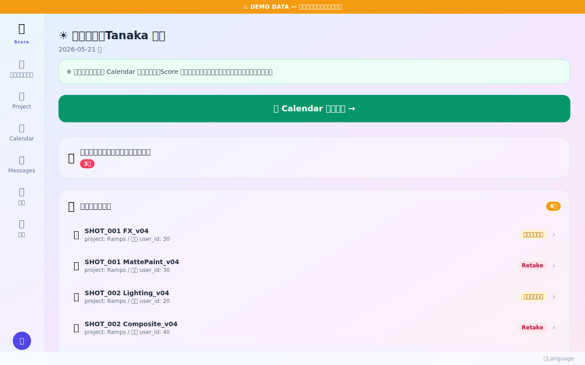
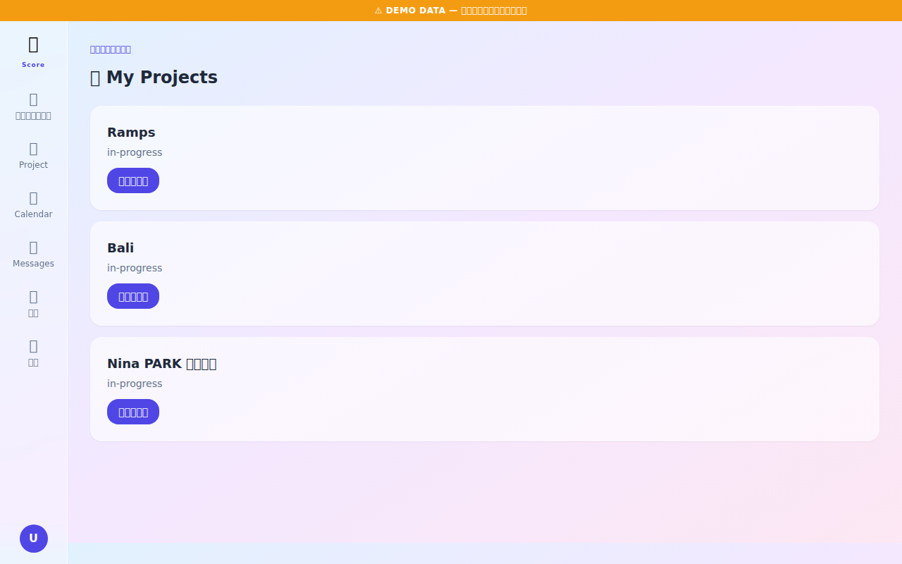
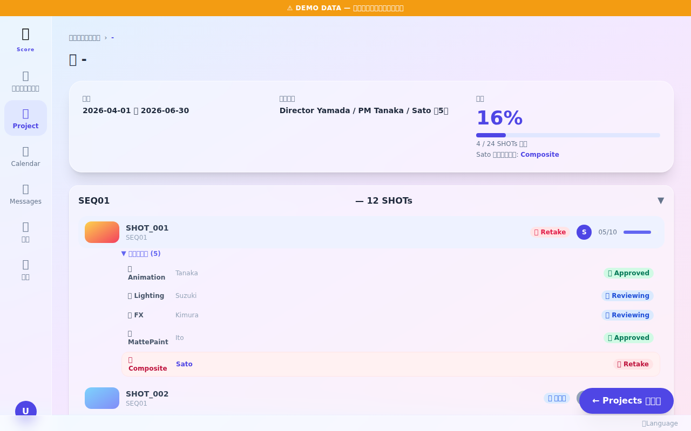
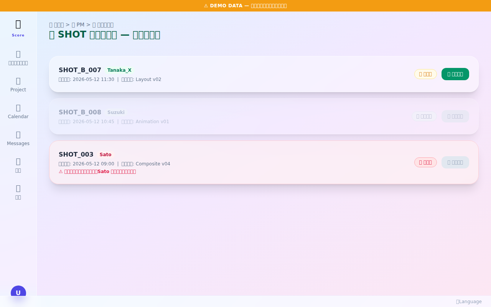
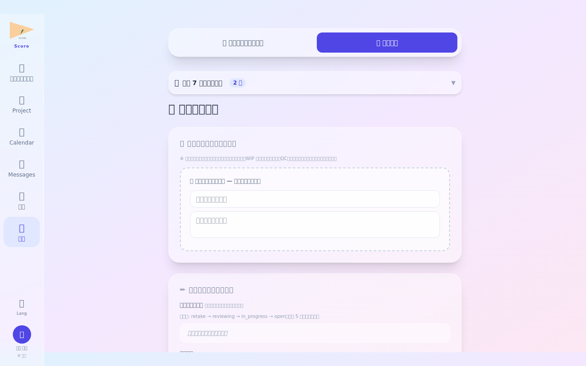
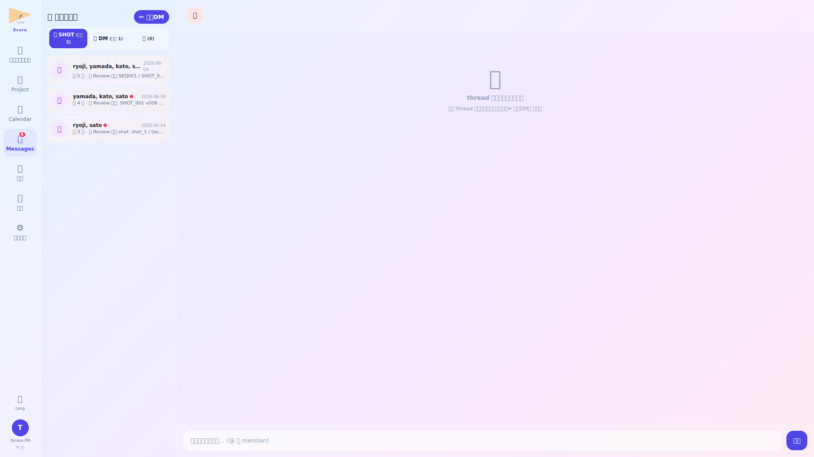
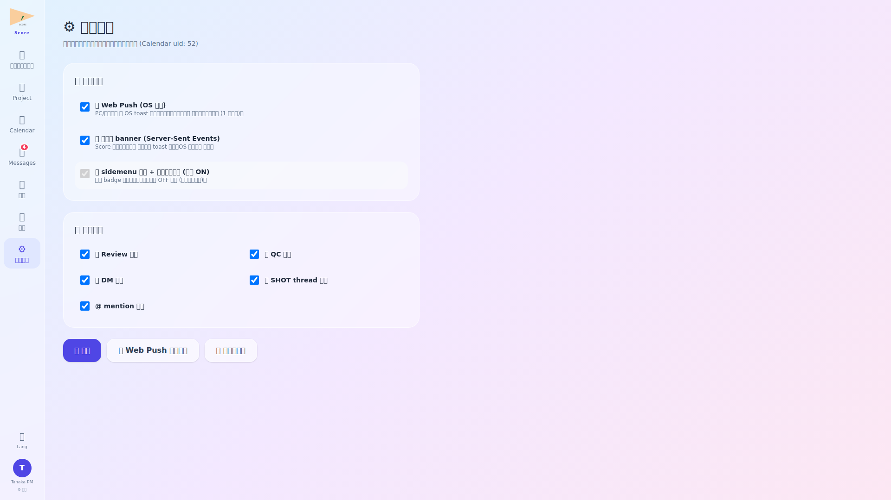

ログイン・朝のルーティン確認

Score にログイン後、まず「ルーティン」画面を確認します。本日の定例タスクや期限が近い承認待ちアイテムが一覧表示されます。PM は毎朝この画面から 1 日の優先度を把握します。
- 未処理ルーティンは赤色でハイライト表示
- 完了済みルーティンにチェックを入れると非表示に切り替え可能
PM ダッシュボード確認

PM ダッシュボードでは、担当プロジェクト全体の進捗をひと目で把握できます。各プロジェクトの進捗率・直近の納品予定・ボトルネックになっているショットが集約表示されます。
- 進捗率が 80% 未満かつ納品まで 7 日以内のプロジェクトは警告マーク付き
- ダッシュボードから直接プロジェクト詳細へジャンプ可能
プロジェクト一覧・進捗確認

プロジェクト一覧画面では、全担当プロジェクトのステータスと進捗率を一覧で確認します。ステータスフィルタを使い「進行中」「完了待ち」などに絞り込むことができます。
- ステータス・納品日・担当 Director でソート可能
- 各行クリックでプロジェクト詳細へ遷移
プロジェクト詳細・ショット状況

プロジェクト詳細では、ショット単位の進捗・QC ステータス・担当者を確認します。リテイクが多発しているショットや作業が滞っているショットを特定し、Director や Lead に対応を依頼します。
- ショット一覧は QC ステータス (Pending / Reviewing / Approved / Rejected) でフィルタ可能
- ショット行クリックでショット詳細へ遷移し、コメント履歴を確認できる
納品管理

納品管理画面では、納品物の登録・納品ステータス管理・クライアントへの提出記録を行います。PM は最終確認後、「納品完了」ボタンを押すことでプロジェクトを納品済み状態に遷移させます。
- 納品チェックリストで全ショットが Approved 済みか確認してから提出
- 提出後はクライアントへの通知メールが自動送信
カレンダー・スケジュール確認

カレンダー画面でスタジオ全体のスケジュールを確認します。マイルストーン・試写・納品日が色分けで表示されます。PM はこの画面でリソース競合や日程過密を早期に発見し、調整します。
- 月・週・日の 3 ビュー切替対応
- イベントクリックで詳細ポップアップと関連プロジェクトへのリンク表示
退勤報告

退勤前に「退勤報告」を提出します。本日の作業内容・明日の予定・引き継ぎ事項を記入し、送信します。提出後、チームメンバーに通知が届き、引き継ぎがスムーズになります。
- 退勤報告を提出しないとログアウトの確認ダイアログが表示される
- 過去の退勤報告は「退勤報告履歴」から参照可能
💬 メッセージ — SHOT 関係者 thread + 1対1 DM

PM は全 SHOT 関係者 thread に自動 participants として含まれる。各 thread に進捗関連 DM が集約され、QC/Review 依頼の宛先は自動補完。本文中の QC ビューア URL は緑ボタン化されており即遷移。
⚙️ 通知設定 — Push / SSE / 画面 badge の三重立て

PM は全 SHOT の通知が届くため、Push は重要度高 (Review 依頼/mention) に絞り、SHOT thread 投稿は SSE のみで在席時のみ受信、といった配信経路の使い分けで通知過多を防止。